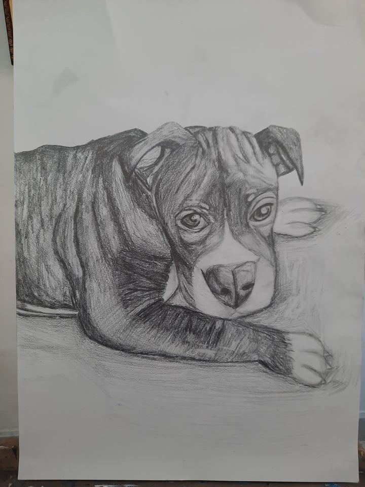

|
A design i created to show detail of elephants i used watercolours |
I drew the cat using acrylic as my medium. I then decided to create a fun backgound using bright colours to help it stick out. |
|
|---|---|---|
|
I was able to capture the emotion that there is in the image. Acrylic was used as a medium. |
Used warm tones to depict different tones. Acrylic medium was used. |
|
| 
This is a picture that I drew of my own dog. I like how I was able to capture most of his wrinkles. Graphite medium was used. |
|
Claude Monet- ‘Lady with an umbrella’ imitation painting. Soft pastels was used. |
'Stary Night' Vincent VanGogh imitation drawing used acrylic as my medium. |
|---|